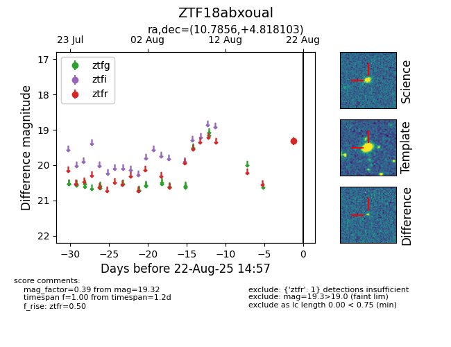

Target ZTF18abxoual at 2025-08-22 15:26, see:
FINK: fink-portal.org/ZTF18abxoual
Lasair: lasair-ztf.lsst.ac.uk/objects/ZTF18abxoual
ALeRCE: alerce.online/object/ZTF18abxoual
alt names
ZTF18abxoual (ztf,alerce)
coordinates:
equatorial (ra, dec) = (10.7856,+4.81810)
galactic (l, b) = (119.0310,-57.99080)
photometry
last ztfr=19.32
1 ztfr detections
